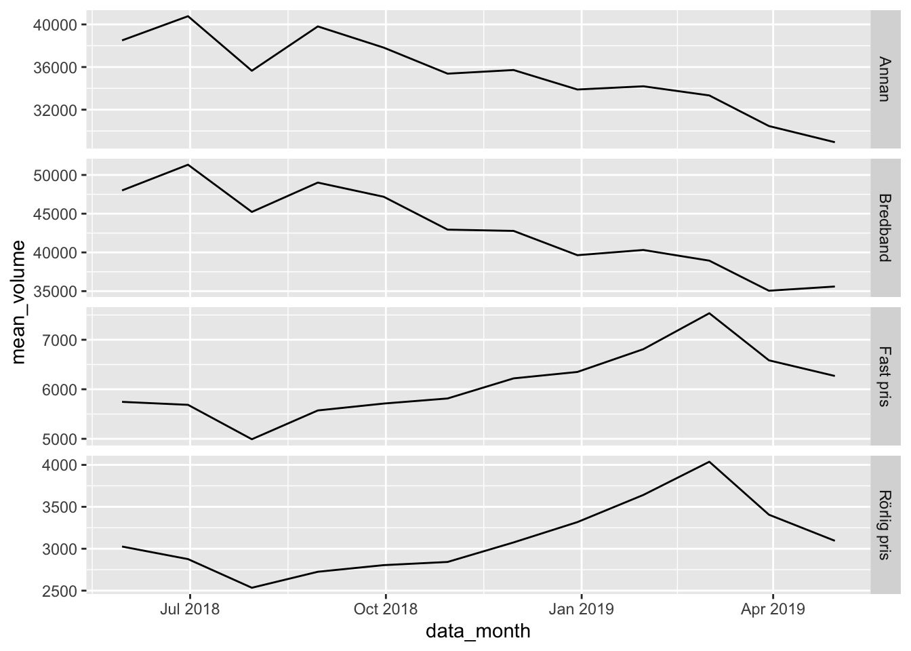

Chapter 5 Answers to excercises
5.1 Excercise
- Press the
knitbutton to compile this Rmarkdown-notebook to a HTML-document - Change the
authorto your name, knit the document again
5.2 Excercise
The package tidyverse is downloaded for you. Load it with library().
5.3 Excercise
- Import the customer data
tele2-kunder-sample.csvinto R
## Parsed with column specification:
## cols(
## .default = col_double(),
## source_date = col_date(format = ""),
## ar_key = col_character(),
## cust_id = col_character(),
## pc_l3_pd_spec_nm = col_character(),
## cpe_type = col_character(),
## cpe_net_type_cmpt = col_character(),
## pc_priceplan_nm = col_character(),
## sc_l5_sales_cnl = col_character(),
## rt_fst_cstatus_act_dt = col_date(format = ""),
## rrpu_amt_used = col_character(),
## rcm1pu_amt_used = col_character()
## )## See spec(...) for full column specifications.- Use
glimpse()on it
## Observations: 300,000
## Variables: 25
## $ source_date <date> 2019-04-30, 2019-04-30, 2019-04-30,…
## $ ar_key <chr> "AAEBfhzgf0riQnApBVflWOkmMXDU8iE=", …
## $ cust_id <chr> "AAEBfv9gf7ePbf1Gdlo5/hEnEoU+SKw=", …
## $ pc_l3_pd_spec_nm <chr> "MOBILE REGULAR", "MOBILE REGULAR", …
## $ cpe_type <chr> NA, "SMARTPHONE", "SMARTPHONE", "SMA…
## $ cpe_net_type_cmpt <chr> NA, "4G", "4G", "4G", "4G", "4G", "4…
## $ pc_priceplan_nm <chr> "Kompis", "Fast pris 20 GB", "Fast p…
## $ sc_l5_sales_cnl <chr> "RETAILER", "RETAILER", "RETAILER", …
## $ rt_fst_cstatus_act_dt <date> 2011-04-28, 2016-11-28, 2017-07-10,…
## $ tr_tot_data_vol_all_netw_1 <dbl> 0.0, 5252.1, 2844.1, 3404.9, 16003.9…
## $ tr_tot_data_vol_all_netw_2 <dbl> 0.0, 4257.8, 8479.6, 5576.5, 17052.2…
## $ tr_tot_data_vol_all_netw_3 <dbl> 0.0, 1718.6, 6746.2, 2670.8, 17990.2…
## $ tr_tot_data_vol_all_netw_4 <dbl> 0.0, 4716.0, 4620.3, 5493.7, 16964.0…
## $ tr_tot_data_vol_all_netw_5 <dbl> 0.0, 6252.0, 3374.7, 4393.4, 13623.4…
## $ tr_tot_data_vol_all_netw_6 <dbl> 0.0, 6136.5, 3142.3, 6417.5, 7598.6,…
## $ tr_tot_data_vol_all_netw_7 <dbl> 0.0, 4900.6, 3255.6, 5976.8, 10110.0…
## $ tr_tot_data_vol_all_netw_8 <dbl> 0.0, 1696.3, 7130.7, NA, 11497.0, 67…
## $ tr_tot_data_vol_all_netw_9 <dbl> NA, 3166.1, 8088.5, NA, 13318.2, 386…
## $ tr_tot_data_vol_all_netw_10 <dbl> 0.0, 6852.1, 10504.6, NA, 9623.9, 20…
## $ tr_tot_data_vol_all_netw_11 <dbl> 0.0, 5599.7, 6507.9, NA, 9259.9, 264…
## $ tr_tot_data_vol_all_netw_12 <dbl> 0.0, 2892.2, 4485.1, NA, 5254.3, 2.7…
## $ alloc_rrpu_amt <dbl> 39.20073, 841.34443, 339.25698, 283.…
## $ alloc_rcm1pu_amt <dbl> 39.20073, 824.74999, 239.95938, 253.…
## $ rrpu_amt_used <chr> "Allocated RRPU", "Allocated RRPU", …
## $ rcm1pu_amt_used <chr> "Allocated RCM1PU", "Allocated RCM1P…- Try knitting the Rmarkdown again
5.4 Excercise 1
- How many customers had a data-volume over 1000 in february 2019?
## # A tibble: 198,235 x 25
## source_date ar_key cust_id pc_l3_pd_spec_nm cpe_type cpe_net_type_cm…
## <date> <chr> <chr> <chr> <chr> <chr>
## 1 2019-04-30 AAEBf… AAEBfr… MOBILE REGULAR SMARTPH… 4G
## 2 2019-04-30 AAEBf… AAEBfm… MOBILE REGULAR SMARTPH… 4G
## 3 2019-04-30 AAEBf… AAEBfm… MOBILE REGULAR SMARTPH… 4G
## 4 2019-04-30 AAEBf… AAEBfr… MOBILE REGULAR SMARTPH… 4G
## 5 2019-04-30 AAEBf… AAEBfr… MOBILE REGULAR SMARTPH… 4G
## 6 2019-04-30 AAEBf… AAEBft… MOBILE REGULAR SMARTPH… 4G
## 7 2019-04-30 AAEBf… AAEBft… MOBILE REGULAR SMARTPH… 4G
## 8 2019-04-30 AAEBf… AAEBfv… MOBILE REGULAR SMARTPH… 4G
## 9 2019-04-30 AAEBf… AAEBfm… MOBILE REGULAR SMARTPH… 4G
## 10 2019-04-30 AAEBf… AAEBfq… MOBILE REGULAR SMARTPH… 4G
## # … with 198,225 more rows, and 19 more variables: pc_priceplan_nm <chr>,
## # sc_l5_sales_cnl <chr>, rt_fst_cstatus_act_dt <date>,
## # tr_tot_data_vol_all_netw_1 <dbl>, tr_tot_data_vol_all_netw_2 <dbl>,
## # tr_tot_data_vol_all_netw_3 <dbl>, tr_tot_data_vol_all_netw_4 <dbl>,
## # tr_tot_data_vol_all_netw_5 <dbl>, tr_tot_data_vol_all_netw_6 <dbl>,
## # tr_tot_data_vol_all_netw_7 <dbl>, tr_tot_data_vol_all_netw_8 <dbl>,
## # tr_tot_data_vol_all_netw_9 <dbl>, tr_tot_data_vol_all_netw_10 <dbl>,
## # tr_tot_data_vol_all_netw_11 <dbl>, tr_tot_data_vol_all_netw_12 <dbl>,
## # alloc_rrpu_amt <dbl>, alloc_rcm1pu_amt <dbl>, rrpu_amt_used <chr>,
## # rcm1pu_amt_used <chr>- How many customers have been “active” longer than 2005?
## # A tibble: 15,837 x 25
## source_date ar_key cust_id pc_l3_pd_spec_nm cpe_type cpe_net_type_cm…
## <date> <chr> <chr> <chr> <chr> <chr>
## 1 2019-04-30 AAEBf… AAEBfg… MOBILE REGULAR SMARTPH… 4G
## 2 2019-04-30 AAEBf… AAEBfq… MOBILE REGULAR SMARTPH… 4G
## 3 2019-04-30 AAEBf… AAEBfm… MOBILE REGULAR SMARTPH… 4G
## 4 2019-04-30 AAEBf… AAEBfg… MOBILE REGULAR SMARTPH… 4G
## 5 2019-04-30 AAEBf… AAEBfk… MOBILE REGULAR FEATURE… 3G
## 6 2019-04-30 AAEBf… AAEBfu… MOBILE REGULAR SMARTPH… 4G
## 7 2019-04-30 AAEBf… AAEBfq… MOBILE REGULAR MOBILE … <NA>
## 8 2019-04-30 AAEBf… AAEBfr… MOBILE REGULAR SMARTPH… 4G
## 9 2019-04-30 AAEBf… AAEBfg… MOBILE REGULAR MOBILE … <NA>
## 10 2019-04-30 AAEBf… AAEBfu… MOBILE REGULAR SMARTPH… 4G
## # … with 15,827 more rows, and 19 more variables: pc_priceplan_nm <chr>,
## # sc_l5_sales_cnl <chr>, rt_fst_cstatus_act_dt <date>,
## # tr_tot_data_vol_all_netw_1 <dbl>, tr_tot_data_vol_all_netw_2 <dbl>,
## # tr_tot_data_vol_all_netw_3 <dbl>, tr_tot_data_vol_all_netw_4 <dbl>,
## # tr_tot_data_vol_all_netw_5 <dbl>, tr_tot_data_vol_all_netw_6 <dbl>,
## # tr_tot_data_vol_all_netw_7 <dbl>, tr_tot_data_vol_all_netw_8 <dbl>,
## # tr_tot_data_vol_all_netw_9 <dbl>, tr_tot_data_vol_all_netw_10 <dbl>,
## # tr_tot_data_vol_all_netw_11 <dbl>, tr_tot_data_vol_all_netw_12 <dbl>,
## # alloc_rrpu_amt <dbl>, alloc_rcm1pu_amt <dbl>, rrpu_amt_used <chr>,
## # rcm1pu_amt_used <chr>- How many customers have a data-volume over 2000 in february and have a calculated revenue larger than 500 per month?
## # A tibble: 3,758 x 25
## source_date ar_key cust_id pc_l3_pd_spec_nm cpe_type cpe_net_type_cm…
## <date> <chr> <chr> <chr> <chr> <chr>
## 1 2019-04-30 AAEBf… AAEBfr… MOBILE REGULAR SMARTPH… 4G
## 2 2019-04-30 AAEBf… AAEBfm… MOBILE REGULAR SMARTPH… 4G
## 3 2019-04-30 AAEBf… AAEBfm… MOBILE REGULAR SMARTPH… 4G
## 4 2019-04-30 AAEBf… AAEBft… MOBILE REGULAR SMARTPH… 4G
## 5 2019-04-30 AAEBf… AAEBfs… MOBILE REGULAR SMARTPH… 4G
## 6 2019-04-30 AAEBf… AAEBfi… MOBILE REGULAR SMARTPH… 4G
## 7 2019-04-30 AAEBf… AAEBft… MOBILE REGULAR SMARTPH… 4G
## 8 2019-04-30 AAEBf… AAEBfg… MOBILE REGULAR SMARTPH… 4G
## 9 2019-04-30 AAEBf… AAEBfh… MOBILE REGULAR SMARTPH… 4G
## 10 2019-04-30 AAEBf… AAEBfh… MOBILE REGULAR SMARTPH… 4G
## # … with 3,748 more rows, and 19 more variables: pc_priceplan_nm <chr>,
## # sc_l5_sales_cnl <chr>, rt_fst_cstatus_act_dt <date>,
## # tr_tot_data_vol_all_netw_1 <dbl>, tr_tot_data_vol_all_netw_2 <dbl>,
## # tr_tot_data_vol_all_netw_3 <dbl>, tr_tot_data_vol_all_netw_4 <dbl>,
## # tr_tot_data_vol_all_netw_5 <dbl>, tr_tot_data_vol_all_netw_6 <dbl>,
## # tr_tot_data_vol_all_netw_7 <dbl>, tr_tot_data_vol_all_netw_8 <dbl>,
## # tr_tot_data_vol_all_netw_9 <dbl>, tr_tot_data_vol_all_netw_10 <dbl>,
## # tr_tot_data_vol_all_netw_11 <dbl>, tr_tot_data_vol_all_netw_12 <dbl>,
## # alloc_rrpu_amt <dbl>, alloc_rcm1pu_amt <dbl>, rrpu_amt_used <chr>,
## # rcm1pu_amt_used <chr>- How many customers have a priceplan with “Rörlig pris”?
## # A tibble: 0 x 25
## # … with 25 variables: source_date <date>, ar_key <chr>, cust_id <chr>,
## # pc_l3_pd_spec_nm <chr>, cpe_type <chr>, cpe_net_type_cmpt <chr>,
## # pc_priceplan_nm <chr>, sc_l5_sales_cnl <chr>,
## # rt_fst_cstatus_act_dt <date>, tr_tot_data_vol_all_netw_1 <dbl>,
## # tr_tot_data_vol_all_netw_2 <dbl>, tr_tot_data_vol_all_netw_3 <dbl>,
## # tr_tot_data_vol_all_netw_4 <dbl>, tr_tot_data_vol_all_netw_5 <dbl>,
## # tr_tot_data_vol_all_netw_6 <dbl>, tr_tot_data_vol_all_netw_7 <dbl>,
## # tr_tot_data_vol_all_netw_8 <dbl>, tr_tot_data_vol_all_netw_9 <dbl>,
## # tr_tot_data_vol_all_netw_10 <dbl>, tr_tot_data_vol_all_netw_11 <dbl>,
## # tr_tot_data_vol_all_netw_12 <dbl>, alloc_rrpu_amt <dbl>,
## # alloc_rcm1pu_amt <dbl>, rrpu_amt_used <chr>, rcm1pu_amt_used <chr>- Are there any customers that are missing an ID? I.e. is
NA.
## # A tibble: 0 x 25
## # … with 25 variables: source_date <date>, ar_key <chr>, cust_id <chr>,
## # pc_l3_pd_spec_nm <chr>, cpe_type <chr>, cpe_net_type_cmpt <chr>,
## # pc_priceplan_nm <chr>, sc_l5_sales_cnl <chr>,
## # rt_fst_cstatus_act_dt <date>, tr_tot_data_vol_all_netw_1 <dbl>,
## # tr_tot_data_vol_all_netw_2 <dbl>, tr_tot_data_vol_all_netw_3 <dbl>,
## # tr_tot_data_vol_all_netw_4 <dbl>, tr_tot_data_vol_all_netw_5 <dbl>,
## # tr_tot_data_vol_all_netw_6 <dbl>, tr_tot_data_vol_all_netw_7 <dbl>,
## # tr_tot_data_vol_all_netw_8 <dbl>, tr_tot_data_vol_all_netw_9 <dbl>,
## # tr_tot_data_vol_all_netw_10 <dbl>, tr_tot_data_vol_all_netw_11 <dbl>,
## # tr_tot_data_vol_all_netw_12 <dbl>, alloc_rrpu_amt <dbl>,
## # alloc_rcm1pu_amt <dbl>, rrpu_amt_used <chr>, rcm1pu_amt_used <chr>- Knit the document again
5.5 Excercise 2
- How many customers have a subscription with “Fast pris”?
## # A tibble: 170,324 x 25
## source_date ar_key cust_id pc_l3_pd_spec_nm cpe_type cpe_net_type_cm…
## <date> <chr> <chr> <chr> <chr> <chr>
## 1 2019-04-30 AAEBf… AAEBfr… MOBILE REGULAR SMARTPH… 4G
## 2 2019-04-30 AAEBf… AAEBfm… MOBILE REGULAR SMARTPH… 4G
## 3 2019-04-30 AAEBf… AAEBfm… MOBILE REGULAR SMARTPH… 4G
## 4 2019-04-30 AAEBf… AAEBfr… MOBILE REGULAR SMARTPH… 4G
## 5 2019-04-30 AAEBf… AAEBfg… MOBILE REGULAR SMARTPH… 4G
## 6 2019-04-30 AAEBf… AAEBfq… MOBILE REGULAR SMARTPH… 4G
## 7 2019-04-30 AAEBf… AAEBfr… MOBILE REGULAR SMARTPH… 4G
## 8 2019-04-30 AAEBf… AAEBft… MOBILE REGULAR SMARTPH… 4G
## 9 2019-04-30 AAEBf… AAEBfp… MOBILE REGULAR SMARTPH… 4G
## 10 2019-04-30 AAEBf… AAEBfv… MOBILE REGULAR SMARTPH… 4G
## # … with 170,314 more rows, and 19 more variables: pc_priceplan_nm <chr>,
## # sc_l5_sales_cnl <chr>, rt_fst_cstatus_act_dt <date>,
## # tr_tot_data_vol_all_netw_1 <dbl>, tr_tot_data_vol_all_netw_2 <dbl>,
## # tr_tot_data_vol_all_netw_3 <dbl>, tr_tot_data_vol_all_netw_4 <dbl>,
## # tr_tot_data_vol_all_netw_5 <dbl>, tr_tot_data_vol_all_netw_6 <dbl>,
## # tr_tot_data_vol_all_netw_7 <dbl>, tr_tot_data_vol_all_netw_8 <dbl>,
## # tr_tot_data_vol_all_netw_9 <dbl>, tr_tot_data_vol_all_netw_10 <dbl>,
## # tr_tot_data_vol_all_netw_11 <dbl>, tr_tot_data_vol_all_netw_12 <dbl>,
## # alloc_rrpu_amt <dbl>, alloc_rcm1pu_amt <dbl>, rrpu_amt_used <chr>,
## # rcm1pu_amt_used <chr>- How many customers have a subscription that is not “Bredband”?
## # A tibble: 257,391 x 25
## source_date ar_key cust_id pc_l3_pd_spec_nm cpe_type cpe_net_type_cm…
## <date> <chr> <chr> <chr> <chr> <chr>
## 1 2019-04-30 AAEBf… AAEBfv… MOBILE REGULAR <NA> <NA>
## 2 2019-04-30 AAEBf… AAEBfr… MOBILE REGULAR SMARTPH… 4G
## 3 2019-04-30 AAEBf… AAEBfm… MOBILE REGULAR SMARTPH… 4G
## 4 2019-04-30 AAEBf… AAEBfm… MOBILE REGULAR SMARTPH… 4G
## 5 2019-04-30 AAEBf… AAEBfr… MOBILE REGULAR SMARTPH… 4G
## 6 2019-04-30 AAEBf… AAEBfg… MOBILE REGULAR SMARTPH… 4G
## 7 2019-04-30 AAEBf… AAEBfg… MOBILE REGULAR SMARTPH… 4G
## 8 2019-04-30 AAEBf… AAEBfq… MOBILE REGULAR SMARTPH… 4G
## 9 2019-04-30 AAEBf… AAEBfr… MOBILE REGULAR SMARTPH… 4G
## 10 2019-04-30 AAEBf… AAEBft… MOBILE REGULAR SMARTPH… 4G
## # … with 257,381 more rows, and 19 more variables: pc_priceplan_nm <chr>,
## # sc_l5_sales_cnl <chr>, rt_fst_cstatus_act_dt <date>,
## # tr_tot_data_vol_all_netw_1 <dbl>, tr_tot_data_vol_all_netw_2 <dbl>,
## # tr_tot_data_vol_all_netw_3 <dbl>, tr_tot_data_vol_all_netw_4 <dbl>,
## # tr_tot_data_vol_all_netw_5 <dbl>, tr_tot_data_vol_all_netw_6 <dbl>,
## # tr_tot_data_vol_all_netw_7 <dbl>, tr_tot_data_vol_all_netw_8 <dbl>,
## # tr_tot_data_vol_all_netw_9 <dbl>, tr_tot_data_vol_all_netw_10 <dbl>,
## # tr_tot_data_vol_all_netw_11 <dbl>, tr_tot_data_vol_all_netw_12 <dbl>,
## # alloc_rrpu_amt <dbl>, alloc_rcm1pu_amt <dbl>, rrpu_amt_used <chr>,
## # rcm1pu_amt_used <chr>- …dare I say… knit the document again?
5.6 Excercise 3
- Which customer has been “active” longest? What is the date?
## # A tibble: 300,000 x 25
## source_date ar_key cust_id pc_l3_pd_spec_nm cpe_type cpe_net_type_cm…
## <date> <chr> <chr> <chr> <chr> <chr>
## 1 2019-04-30 AAEBf… AAEBfv… MOBILE REGULAR SMARTPH… 4G
## 2 2019-04-30 AAEBf… AAEBfn… MOBILE REGULAR SMARTPH… 4G
## 3 2019-04-30 AAEBf… AAEBfr… MOBILE REGULAR SMARTPH… 4G
## 4 2019-04-30 AAEBf… AAEBfk… MOBILE REGULAR SMARTPH… 4G
## 5 2019-04-30 AAEBf… AAEBfm… MOBILE REGULAR MOBILE … 2G
## 6 2019-04-30 AAEBf… AAEBfl… MOBILE REGULAR MOBILE … 2.5G
## 7 2019-04-30 AAEBf… AAEBfg… MOBILE REGULAR SMARTPH… 4G
## 8 2019-04-30 AAEBf… AAEBfi… MOBILE REGULAR MOBILE … <NA>
## 9 2019-04-30 AAEBf… AAEBfs… MOBILE REGULAR SMARTPH… 4G
## 10 2019-04-30 AAEBf… AAEBfo… MOBILE REGULAR SMARTPH… 2.5G
## # … with 299,990 more rows, and 19 more variables: pc_priceplan_nm <chr>,
## # sc_l5_sales_cnl <chr>, rt_fst_cstatus_act_dt <date>,
## # tr_tot_data_vol_all_netw_1 <dbl>, tr_tot_data_vol_all_netw_2 <dbl>,
## # tr_tot_data_vol_all_netw_3 <dbl>, tr_tot_data_vol_all_netw_4 <dbl>,
## # tr_tot_data_vol_all_netw_5 <dbl>, tr_tot_data_vol_all_netw_6 <dbl>,
## # tr_tot_data_vol_all_netw_7 <dbl>, tr_tot_data_vol_all_netw_8 <dbl>,
## # tr_tot_data_vol_all_netw_9 <dbl>, tr_tot_data_vol_all_netw_10 <dbl>,
## # tr_tot_data_vol_all_netw_11 <dbl>, tr_tot_data_vol_all_netw_12 <dbl>,
## # alloc_rrpu_amt <dbl>, alloc_rcm1pu_amt <dbl>, rrpu_amt_used <chr>,
## # rcm1pu_amt_used <chr>- Which customer is most newly active?
## # A tibble: 300,000 x 25
## source_date ar_key cust_id pc_l3_pd_spec_nm cpe_type cpe_net_type_cm…
## <date> <chr> <chr> <chr> <chr> <chr>
## 1 2019-04-30 AAEBf… AAEBfu… MOBILE REGULAR <NA> <NA>
## 2 2019-04-30 AAEBf… AAEBft… MOBILE REGULAR <NA> <NA>
## 3 2019-04-30 AAEBf… AAEBfv… MOBILE REGULAR <NA> <NA>
## 4 2019-04-30 AAEBf… AAEBfq… MOBILE REGULAR SMARTPH… 4G
## 5 2019-04-30 AAEBf… AAEBfq… MOBILE REGULAR <NA> <NA>
## 6 2019-04-30 AAEBf… AAEBfl… MOBILE REGULAR SMARTPH… 4G
## 7 2019-04-30 AAEBf… AAEBfi… MOBILE REGULAR <NA> <NA>
## 8 2019-04-30 AAEBf… AAEBfg… MOBILE REGULAR <NA> <NA>
## 9 2019-04-30 AAEBf… AAEBfp… MOBILE REGULAR <NA> <NA>
## 10 2019-04-30 AAEBf… AAEBfm… MOBILE REGULAR <NA> <NA>
## # … with 299,990 more rows, and 19 more variables: pc_priceplan_nm <chr>,
## # sc_l5_sales_cnl <chr>, rt_fst_cstatus_act_dt <date>,
## # tr_tot_data_vol_all_netw_1 <dbl>, tr_tot_data_vol_all_netw_2 <dbl>,
## # tr_tot_data_vol_all_netw_3 <dbl>, tr_tot_data_vol_all_netw_4 <dbl>,
## # tr_tot_data_vol_all_netw_5 <dbl>, tr_tot_data_vol_all_netw_6 <dbl>,
## # tr_tot_data_vol_all_netw_7 <dbl>, tr_tot_data_vol_all_netw_8 <dbl>,
## # tr_tot_data_vol_all_netw_9 <dbl>, tr_tot_data_vol_all_netw_10 <dbl>,
## # tr_tot_data_vol_all_netw_11 <dbl>, tr_tot_data_vol_all_netw_12 <dbl>,
## # alloc_rrpu_amt <dbl>, alloc_rcm1pu_amt <dbl>, rrpu_amt_used <chr>,
## # rcm1pu_amt_used <chr>5.7 Excercise 4
- Choose all columns that contain ”nm"
## # A tibble: 300,000 x 2
## pc_l3_pd_spec_nm pc_priceplan_nm
## <chr> <chr>
## 1 MOBILE REGULAR Kompis
## 2 MOBILE REGULAR Fast pris 20 GB
## 3 MOBILE REGULAR Fast pris +EU 15 GB
## 4 MOBILE REGULAR Fast pris +EU 15 GB - 2018
## 5 MOBILE REGULAR Fast pris
## 6 MOBILE REGULAR Fast pris +EU 5 GB
## 7 MOBILE REGULAR Rörligt pris
## 8 MOBILE REGULAR Fast pris +EU 1 GB
## 9 MOBILE REGULAR Fast pris
## 10 MOBILE REGULAR Fast pris
## # … with 299,990 more rows- Choose the column for customer ID and all columns that starts with ”tr_tot"
## # A tibble: 300,000 x 13
## cust_id tr_tot_data_vol… tr_tot_data_vol… tr_tot_data_vol…
## <chr> <dbl> <dbl> <dbl>
## 1 AAEBfv… 0 0 0
## 2 AAEBfr… 5252. 4258. 1719.
## 3 AAEBfm… 2844. 8480. 6746.
## 4 AAEBfm… 3405. 5576. 2671.
## 5 AAEBfr… 16004. 17052. 17990.
## 6 AAEBfg… 0.3 5.1 830.
## 7 AAEBfg… 0 0 0
## 8 AAEBfq… 28.3 30.4 28.5
## 9 AAEBfr… 6048. 6750 5277.
## 10 AAEBft… 3986. 3583. 2584.
## # … with 299,990 more rows, and 9 more variables:
## # tr_tot_data_vol_all_netw_4 <dbl>, tr_tot_data_vol_all_netw_5 <dbl>,
## # tr_tot_data_vol_all_netw_6 <dbl>, tr_tot_data_vol_all_netw_7 <dbl>,
## # tr_tot_data_vol_all_netw_8 <dbl>, tr_tot_data_vol_all_netw_9 <dbl>,
## # tr_tot_data_vol_all_netw_10 <dbl>, tr_tot_data_vol_all_netw_11 <dbl>,
## # tr_tot_data_vol_all_netw_12 <dbl>- Rename ”pc_priceplan_nm" to ”price_plan"
## # A tibble: 300,000 x 25
## source_date ar_key cust_id pc_l3_pd_spec_nm cpe_type cpe_net_type_cm…
## <date> <chr> <chr> <chr> <chr> <chr>
## 1 2019-04-30 AAEBf… AAEBfv… MOBILE REGULAR <NA> <NA>
## 2 2019-04-30 AAEBf… AAEBfr… MOBILE REGULAR SMARTPH… 4G
## 3 2019-04-30 AAEBf… AAEBfm… MOBILE REGULAR SMARTPH… 4G
## 4 2019-04-30 AAEBf… AAEBfm… MOBILE REGULAR SMARTPH… 4G
## 5 2019-04-30 AAEBf… AAEBfr… MOBILE REGULAR SMARTPH… 4G
## 6 2019-04-30 AAEBf… AAEBfg… MOBILE REGULAR SMARTPH… 4G
## 7 2019-04-30 AAEBf… AAEBfg… MOBILE REGULAR SMARTPH… 4G
## 8 2019-04-30 AAEBf… AAEBfq… MOBILE REGULAR SMARTPH… 4G
## 9 2019-04-30 AAEBf… AAEBfr… MOBILE REGULAR SMARTPH… 4G
## 10 2019-04-30 AAEBf… AAEBft… MOBILE REGULAR SMARTPH… 4G
## # … with 299,990 more rows, and 19 more variables: price_plan <chr>,
## # sc_l5_sales_cnl <chr>, rt_fst_cstatus_act_dt <date>,
## # tr_tot_data_vol_all_netw_1 <dbl>, tr_tot_data_vol_all_netw_2 <dbl>,
## # tr_tot_data_vol_all_netw_3 <dbl>, tr_tot_data_vol_all_netw_4 <dbl>,
## # tr_tot_data_vol_all_netw_5 <dbl>, tr_tot_data_vol_all_netw_6 <dbl>,
## # tr_tot_data_vol_all_netw_7 <dbl>, tr_tot_data_vol_all_netw_8 <dbl>,
## # tr_tot_data_vol_all_netw_9 <dbl>, tr_tot_data_vol_all_netw_10 <dbl>,
## # tr_tot_data_vol_all_netw_11 <dbl>, tr_tot_data_vol_all_netw_12 <dbl>,
## # alloc_rrpu_amt <dbl>, alloc_rcm1pu_amt <dbl>, rrpu_amt_used <chr>,
## # rcm1pu_amt_used <chr>5.8 Excercise 5
- Create a new variable that is the mean of the last 3 months of data consumption for all customers, save this to the data set
- Create a variable that takes the logarithm with base 10 (
log10) of your previously created column
## # A tibble: 300,000 x 27
## source_date ar_key cust_id pc_l3_pd_spec_nm cpe_type cpe_net_type_cm…
## <date> <chr> <chr> <chr> <chr> <chr>
## 1 2019-04-30 AAEBf… AAEBfv… MOBILE REGULAR <NA> <NA>
## 2 2019-04-30 AAEBf… AAEBfr… MOBILE REGULAR SMARTPH… 4G
## 3 2019-04-30 AAEBf… AAEBfm… MOBILE REGULAR SMARTPH… 4G
## 4 2019-04-30 AAEBf… AAEBfm… MOBILE REGULAR SMARTPH… 4G
## 5 2019-04-30 AAEBf… AAEBfr… MOBILE REGULAR SMARTPH… 4G
## 6 2019-04-30 AAEBf… AAEBfg… MOBILE REGULAR SMARTPH… 4G
## 7 2019-04-30 AAEBf… AAEBfg… MOBILE REGULAR SMARTPH… 4G
## 8 2019-04-30 AAEBf… AAEBfq… MOBILE REGULAR SMARTPH… 4G
## 9 2019-04-30 AAEBf… AAEBfr… MOBILE REGULAR SMARTPH… 4G
## 10 2019-04-30 AAEBf… AAEBft… MOBILE REGULAR SMARTPH… 4G
## # … with 299,990 more rows, and 21 more variables: pc_priceplan_nm <chr>,
## # sc_l5_sales_cnl <chr>, rt_fst_cstatus_act_dt <date>,
## # tr_tot_data_vol_all_netw_1 <dbl>, tr_tot_data_vol_all_netw_2 <dbl>,
## # tr_tot_data_vol_all_netw_3 <dbl>, tr_tot_data_vol_all_netw_4 <dbl>,
## # tr_tot_data_vol_all_netw_5 <dbl>, tr_tot_data_vol_all_netw_6 <dbl>,
## # tr_tot_data_vol_all_netw_7 <dbl>, tr_tot_data_vol_all_netw_8 <dbl>,
## # tr_tot_data_vol_all_netw_9 <dbl>, tr_tot_data_vol_all_netw_10 <dbl>,
## # tr_tot_data_vol_all_netw_11 <dbl>, tr_tot_data_vol_all_netw_12 <dbl>,
## # alloc_rrpu_amt <dbl>, alloc_rcm1pu_amt <dbl>, rrpu_amt_used <chr>,
## # rcm1pu_amt_used <chr>, mean_3_months <dbl>, log10_mean_3_months <dbl>- Create a new variable that indicates if the priceplan is “Bredband” or not, save it to the data set
- Create a new variable that groups priceplan in “Fast pris”, “Rörligt pris”, “Bredband” and “Annan” for everything that is not in any of the previous.
kunder <- mutate(kunder, priceplan_cat = case_when(
str_detect(tolower(pc_priceplan_nm), "fast pris") ~ "Fast pris",
str_detect(tolower(pc_priceplan_nm), "bredband") ~ "Bredband",
str_detect(tolower(pc_priceplan_nm), "rörligt pris") ~ "Rörlig pris",
TRUE ~ "Annan"
))
kunder %>%
group_by(priceplan_cat) %>%
count()## # A tibble: 4 x 2
## # Groups: priceplan_cat [4]
## priceplan_cat n
## <chr> <int>
## 1 Annan 74795
## 2 Bredband 42608
## 3 Fast pris 170324
## 4 Rörlig pris 122735.9 Excercise 6
- Create a varible for month
lubridate::month(x)of customer activation
## # A tibble: 300,000 x 29
## source_date ar_key cust_id pc_l3_pd_spec_nm cpe_type cpe_net_type_cm…
## <date> <chr> <chr> <chr> <chr> <chr>
## 1 2019-04-30 AAEBf… AAEBfv… MOBILE REGULAR <NA> <NA>
## 2 2019-04-30 AAEBf… AAEBfr… MOBILE REGULAR SMARTPH… 4G
## 3 2019-04-30 AAEBf… AAEBfm… MOBILE REGULAR SMARTPH… 4G
## 4 2019-04-30 AAEBf… AAEBfm… MOBILE REGULAR SMARTPH… 4G
## 5 2019-04-30 AAEBf… AAEBfr… MOBILE REGULAR SMARTPH… 4G
## 6 2019-04-30 AAEBf… AAEBfg… MOBILE REGULAR SMARTPH… 4G
## 7 2019-04-30 AAEBf… AAEBfg… MOBILE REGULAR SMARTPH… 4G
## 8 2019-04-30 AAEBf… AAEBfq… MOBILE REGULAR SMARTPH… 4G
## 9 2019-04-30 AAEBf… AAEBfr… MOBILE REGULAR SMARTPH… 4G
## 10 2019-04-30 AAEBf… AAEBft… MOBILE REGULAR SMARTPH… 4G
## # … with 299,990 more rows, and 23 more variables: pc_priceplan_nm <chr>,
## # sc_l5_sales_cnl <chr>, rt_fst_cstatus_act_dt <date>,
## # tr_tot_data_vol_all_netw_1 <dbl>, tr_tot_data_vol_all_netw_2 <dbl>,
## # tr_tot_data_vol_all_netw_3 <dbl>, tr_tot_data_vol_all_netw_4 <dbl>,
## # tr_tot_data_vol_all_netw_5 <dbl>, tr_tot_data_vol_all_netw_6 <dbl>,
## # tr_tot_data_vol_all_netw_7 <dbl>, tr_tot_data_vol_all_netw_8 <dbl>,
## # tr_tot_data_vol_all_netw_9 <dbl>, tr_tot_data_vol_all_netw_10 <dbl>,
## # tr_tot_data_vol_all_netw_11 <dbl>, tr_tot_data_vol_all_netw_12 <dbl>,
## # alloc_rrpu_amt <dbl>, alloc_rcm1pu_amt <dbl>, rrpu_amt_used <chr>,
## # rcm1pu_amt_used <chr>, mean_3_months <dbl>, bredband <chr>,
## # priceplan_cat <chr>, month <dbl>- Create a new varibale for
yearof customer activation
## # A tibble: 300,000 x 29
## source_date ar_key cust_id pc_l3_pd_spec_nm cpe_type cpe_net_type_cm…
## <date> <chr> <chr> <chr> <chr> <chr>
## 1 2019-04-30 AAEBf… AAEBfv… MOBILE REGULAR <NA> <NA>
## 2 2019-04-30 AAEBf… AAEBfr… MOBILE REGULAR SMARTPH… 4G
## 3 2019-04-30 AAEBf… AAEBfm… MOBILE REGULAR SMARTPH… 4G
## 4 2019-04-30 AAEBf… AAEBfm… MOBILE REGULAR SMARTPH… 4G
## 5 2019-04-30 AAEBf… AAEBfr… MOBILE REGULAR SMARTPH… 4G
## 6 2019-04-30 AAEBf… AAEBfg… MOBILE REGULAR SMARTPH… 4G
## 7 2019-04-30 AAEBf… AAEBfg… MOBILE REGULAR SMARTPH… 4G
## 8 2019-04-30 AAEBf… AAEBfq… MOBILE REGULAR SMARTPH… 4G
## 9 2019-04-30 AAEBf… AAEBfr… MOBILE REGULAR SMARTPH… 4G
## 10 2019-04-30 AAEBf… AAEBft… MOBILE REGULAR SMARTPH… 4G
## # … with 299,990 more rows, and 23 more variables: pc_priceplan_nm <chr>,
## # sc_l5_sales_cnl <chr>, rt_fst_cstatus_act_dt <date>,
## # tr_tot_data_vol_all_netw_1 <dbl>, tr_tot_data_vol_all_netw_2 <dbl>,
## # tr_tot_data_vol_all_netw_3 <dbl>, tr_tot_data_vol_all_netw_4 <dbl>,
## # tr_tot_data_vol_all_netw_5 <dbl>, tr_tot_data_vol_all_netw_6 <dbl>,
## # tr_tot_data_vol_all_netw_7 <dbl>, tr_tot_data_vol_all_netw_8 <dbl>,
## # tr_tot_data_vol_all_netw_9 <dbl>, tr_tot_data_vol_all_netw_10 <dbl>,
## # tr_tot_data_vol_all_netw_11 <dbl>, tr_tot_data_vol_all_netw_12 <dbl>,
## # alloc_rrpu_amt <dbl>, alloc_rcm1pu_amt <dbl>, rrpu_amt_used <chr>,
## # rcm1pu_amt_used <chr>, mean_3_months <dbl>, bredband <chr>,
## # priceplan_cat <chr>, year <dbl>- Create a new variable with the number of days in the month of activation
## # A tibble: 300,000 x 29
## source_date ar_key cust_id pc_l3_pd_spec_nm cpe_type cpe_net_type_cm…
## <date> <chr> <chr> <chr> <chr> <chr>
## 1 2019-04-30 AAEBf… AAEBfv… MOBILE REGULAR <NA> <NA>
## 2 2019-04-30 AAEBf… AAEBfr… MOBILE REGULAR SMARTPH… 4G
## 3 2019-04-30 AAEBf… AAEBfm… MOBILE REGULAR SMARTPH… 4G
## 4 2019-04-30 AAEBf… AAEBfm… MOBILE REGULAR SMARTPH… 4G
## 5 2019-04-30 AAEBf… AAEBfr… MOBILE REGULAR SMARTPH… 4G
## 6 2019-04-30 AAEBf… AAEBfg… MOBILE REGULAR SMARTPH… 4G
## 7 2019-04-30 AAEBf… AAEBfg… MOBILE REGULAR SMARTPH… 4G
## 8 2019-04-30 AAEBf… AAEBfq… MOBILE REGULAR SMARTPH… 4G
## 9 2019-04-30 AAEBf… AAEBfr… MOBILE REGULAR SMARTPH… 4G
## 10 2019-04-30 AAEBf… AAEBft… MOBILE REGULAR SMARTPH… 4G
## # … with 299,990 more rows, and 23 more variables: pc_priceplan_nm <chr>,
## # sc_l5_sales_cnl <chr>, rt_fst_cstatus_act_dt <date>,
## # tr_tot_data_vol_all_netw_1 <dbl>, tr_tot_data_vol_all_netw_2 <dbl>,
## # tr_tot_data_vol_all_netw_3 <dbl>, tr_tot_data_vol_all_netw_4 <dbl>,
## # tr_tot_data_vol_all_netw_5 <dbl>, tr_tot_data_vol_all_netw_6 <dbl>,
## # tr_tot_data_vol_all_netw_7 <dbl>, tr_tot_data_vol_all_netw_8 <dbl>,
## # tr_tot_data_vol_all_netw_9 <dbl>, tr_tot_data_vol_all_netw_10 <dbl>,
## # tr_tot_data_vol_all_netw_11 <dbl>, tr_tot_data_vol_all_netw_12 <dbl>,
## # alloc_rrpu_amt <dbl>, alloc_rcm1pu_amt <dbl>, rrpu_amt_used <chr>,
## # rcm1pu_amt_used <chr>, mean_3_months <dbl>, bredband <chr>,
## # priceplan_cat <chr>, days_in_month <int>5.10 Excercise 7
- What is the sum data volume during the last month? What’s the mean and median and what are the max and min values? You can use
max()andmin()to calculate maximum and minimum-values.
summarise(kunder,
sum_data_vol = sum(tr_tot_data_vol_all_netw_1, na.rm = T),
mean_data_vol = mean(tr_tot_data_vol_all_netw_1, na.rm = T),
median_data_vol = median(tr_tot_data_vol_all_netw_1, na.rm = T),
min_data_vol = min(tr_tot_data_vol_all_netw_1, na.rm = T),
max_data_vol = max(tr_tot_data_vol_all_netw_1, na.rm = T))## # A tibble: 1 x 5
## sum_data_vol mean_data_vol median_data_vol min_data_vol max_data_vol
## <dbl> <dbl> <dbl> <dbl> <dbl>
## 1 5522899512. 19133. 4174 0 1674204.5.11 Excercise 8
Use %>% and answer the following questions:
- Which CPE type is most common?
## # A tibble: 21 x 2
## # Groups: cpe_type [21]
## cpe_type n
## <chr> <int>
## 1 SMARTPHONE 236839
## 2 WLAN ROUTER 18637
## 3 MODEM 16859
## 4 MOBILE PHONE/FEATURE PHONE 10763
## 5 <NA> 6014
## 6 TABLET 5396
## 7 FEATURE PHONE 2313
## 8 ROUTER 1041
## 9 USB MODEM 1016
## 10 DONGLE 802
## # … with 11 more rows- Which priceplan has the highest mean data volume (for febraury 2019)?
kunder %>%
group_by(pc_priceplan_nm) %>%
summarise(mean_data_vol = mean(tr_tot_data_vol_all_netw_1, na.rm = T)) %>%
arrange(desc(mean_data_vol))## # A tibble: 137 x 2
## pc_priceplan_nm mean_data_vol
## <chr> <dbl>
## 1 Bredband 4G Only 400 GB - 2018 181130.
## 2 Bredband 4G Only 400 GB - 2019 168404.
## 3 Unlimited 140013.
## 4 Mobilt Bredband 4GL Obegränsad 125286.
## 5 Bredband 4G 200 GB 115727.
## 6 Fast pris 200 GB 110948.
## 7 Bredband 4G Only 200 GB 93155.
## 8 Bredband 4G Only 200 GB - 2018 92934.
## 9 Unlimited - 2018 70179.
## 10 Bredband 4G Only 100 GB - 2019 65644.
## # … with 127 more rows- Calculate the mean of data volume for the year that the customer was created. Which year has the highest mean?
kunder %>%
mutate(year = lubridate::year(rt_fst_cstatus_act_dt)) %>%
group_by(year) %>%
summarise(mean_data_vol = mean(tr_tot_data_vol_all_netw_1, na.rm = T)) %>%
arrange(desc(mean_data_vol))## # A tibble: 28 x 2
## year mean_data_vol
## <dbl> <dbl>
## 1 2017 37434.
## 2 2018 32874.
## 3 2019 25331.
## 4 2016 21831.
## 5 2013 20337.
## 6 2015 19447.
## 7 2014 16353.
## 8 2012 14911.
## 9 2011 12822.
## 10 NA 11904.
## # … with 18 more rows5.12 Excercise 9
Join you data with tele2-transactions.csv by cust_id.
## Parsed with column specification:
## cols(
## su_contract_dt = col_date(format = ""),
## ar_key = col_character(),
## cust_id = col_character(),
## false_gi = col_double(),
## increasednosub = col_double(),
## pc_l3_pd_spec_nm = col_character(),
## cust_tp = col_character(),
## sc_l5_sales_cnl = col_character(),
## pc_priceplan_nm = col_character(),
## bas_buck_size = col_character(),
## rrpu = col_double()
## )## # A tibble: 300,000 x 37
## source_date ar_key cust_id pc_l3_pd_spec_n… cpe_type cpe_net_type_cm…
## <date> <chr> <chr> <chr> <chr> <chr>
## 1 2019-04-30 AAEBf… AAEBfv… MOBILE REGULAR <NA> <NA>
## 2 2019-04-30 AAEBf… AAEBfr… MOBILE REGULAR SMARTPH… 4G
## 3 2019-04-30 AAEBf… AAEBfm… MOBILE REGULAR SMARTPH… 4G
## 4 2019-04-30 AAEBf… AAEBfm… MOBILE REGULAR SMARTPH… 4G
## 5 2019-04-30 AAEBf… AAEBfr… MOBILE REGULAR SMARTPH… 4G
## 6 2019-04-30 AAEBf… AAEBfg… MOBILE REGULAR SMARTPH… 4G
## 7 2019-04-30 AAEBf… AAEBfg… MOBILE REGULAR SMARTPH… 4G
## 8 2019-04-30 AAEBf… AAEBfq… MOBILE REGULAR SMARTPH… 4G
## 9 2019-04-30 AAEBf… AAEBfr… MOBILE REGULAR SMARTPH… 4G
## 10 2019-04-30 AAEBf… AAEBft… MOBILE REGULAR SMARTPH… 4G
## # … with 299,990 more rows, and 31 more variables:
## # pc_priceplan_nm.x <chr>, sc_l5_sales_cnl.x <chr>,
## # rt_fst_cstatus_act_dt <date>, tr_tot_data_vol_all_netw_1 <dbl>,
## # tr_tot_data_vol_all_netw_2 <dbl>, tr_tot_data_vol_all_netw_3 <dbl>,
## # tr_tot_data_vol_all_netw_4 <dbl>, tr_tot_data_vol_all_netw_5 <dbl>,
## # tr_tot_data_vol_all_netw_6 <dbl>, tr_tot_data_vol_all_netw_7 <dbl>,
## # tr_tot_data_vol_all_netw_8 <dbl>, tr_tot_data_vol_all_netw_9 <dbl>,
## # tr_tot_data_vol_all_netw_10 <dbl>, tr_tot_data_vol_all_netw_11 <dbl>,
## # tr_tot_data_vol_all_netw_12 <dbl>, alloc_rrpu_amt <dbl>,
## # alloc_rcm1pu_amt <dbl>, rrpu_amt_used <chr>, rcm1pu_amt_used <chr>,
## # mean_3_months <dbl>, bredband <chr>, priceplan_cat <chr>,
## # su_contract_dt <date>, false_gi <dbl>, increasednosub <dbl>,
## # pc_l3_pd_spec_nm.y <chr>, cust_tp <chr>, sc_l5_sales_cnl.y <chr>,
## # pc_priceplan_nm.y <chr>, bas_buck_size <chr>, rrpu <dbl>5.13 Excercise 10
In your data set you have 12 columns for data volume consumption per month.
You want to calculate the difference of these and therefore have to gather these columns.
- Fill in the blank spaces to:
- Gather the columns
- Save it to a new data.frame, for example
kunder_tidy_month - Change
eval=FALSEtoeval=TRUEbefore knitting
new_cols <- seq(from = as.Date("2018-05-30"), by = "month", length.out = 12) %>%
sort(decreasing = ) %>%
as.character()
kunder_tidy_month <- kunder %>%
select(cust_id, source_date, priceplan_cat, tr_tot_data_vol_all_netw_1:tr_tot_data_vol_all_netw_12) %>%
rename_at(vars(tr_tot_data_vol_all_netw_1:tr_tot_data_vol_all_netw_12), ~new_cols) %>%
gather(data_month, data_volume, `2018-05-30`:`2019-04-30`) %>%
mutate(data_month = as.Date(data_month))5.14 Extra
Run this visualization, set eval=TRUE in the chunk option before knitting.
kunder_tidy_month %>%
group_by(priceplan_cat, data_month) %>%
summarise(mean_volume = mean(data_volume, na.rm = T)) %>%
ggplot(aes(x = data_month, y = mean_volume)) +
geom_line() +
scale_color_discrete() +
facet_grid(rows = vars(priceplan_cat), scales = "free")